Gesamtroute
Camino Portugués · Zentralroute
| Kennzahl | Wert |
|---|---|
| Start | Kathedrale Porto (Sé), Portugal |
| Ziel | Kathedrale Santiago de Compostela, Galicien |
| Gesamtlänge | ≈ 260 km (je nach Messung) |
| Etappen | 13 Etappen (02.–14.09.2026), Anreisetag 01.09. |
| Ø Tagesdistanz | ≈ 20 km |
Etappenübersicht
| Tag | Datum | Von → Nach | km | Gehzeit | ▲ Hm | Grad |
|---|---|---|---|---|---|---|
| 1 | 01.09 | Anreise → Mosteiró | – | – | – | – |
| 2 | 02.09 | Porto → Vairão | ≈22 | ca. 6 h | +200 | ★★☆ |
| 3 | 03.09 | Vairão → Barcelos | 23 | 5,75 h | +210 | ★★☆ |
| 4 | 04.09 | Barcelos → Balugães | 17 | 4,25 h | +230 | ★★☆ |
| 5 | 05.09 | Balugães → Ponte de Lima | 16 | 4,0 h | +180 | ★★☆ |
| 6 | 06.09 | Ponte de Lima → Rubiães | 18 | 5,0 h | +540 | ★★★ |
| 7 | 07.09 | Rubiães → Tui 🇪🇸 | 19 | 4,75 h | +170 | ★★☆ |
| 8 | 08.09 | Tui → O Porriño | 18 | 4,5 h | +140 | ★★☆ |
| 9 | 09.09 | O Porriño → Redondela | 16 | 4,0 h | +260 | ★★☆ |
| 10 | 10.09 | Redondela → Pontevedra | 20 | 5,0 h | +330 | ★★☆ |
| 11 | 11.09 | Pontevedra → Caldas de Reis | 21 | 5,25 h | +290 | ★★☆ |
| 12 | 12.09 | Caldas de Reis → Padrón | 19 | 4,75 h | +260 | ★★☆ |
| 13 | 13.09 | Padrón → O Milladoiro | 16 | 4,0 h | +300 | ★★☆ |
| 14 | 14.09 | O Milladoiro → Santiago 🎉 | 8 | 2,0 h | +120 | ★☆☆ |
Beste Reisezeit & Wetter
September ist ideal: warm, stabil, weniger Pilger als im Hochsommer, alle Herbergen geöffnet. Tagsüber 22–27 °C, nachts 12–17 °C. Portugal-Teil meist trocken; in Galicien jederzeit kurze Schauer möglich — Poncho griffbereit.
Die 13 Etappen
Zum Aufklappen anklicken
1 Anreise → Mosteiró01.09.2026
Ablauf
Ankunft am späten Abend, gegen 23:30 Uhr. Übernachtung in der Casa dos Caminhos de Santiago de Compostela (R. de Trás 480, 4485-930 Mosteiró) — 25 € für die Nacht, zzgl. 5 € Aufschlag für den späten Check-in.
2 Porto → Vairão02.09.2026
Hinweg zur Kathedrale
Von der Unterkunft in Mosteiró geht es per ÖPNV zur Kathedrale von Porto (Sé) — dem offiziellen Startpunkt: 21 Min. zu Fuß (1,4 km) bis Vilar do Pinheiro, dann Metrolinie B bis Estádio do Dragão (30 Min., 16 Stationen), Metrolinie D bis Santo Ovídio (3 Min., 2 Stationen), zuletzt 5 Min. zu Fuß (350 m) bis zur Kathedrale. Gesamt ≈ 1 Std., 2,30 €.
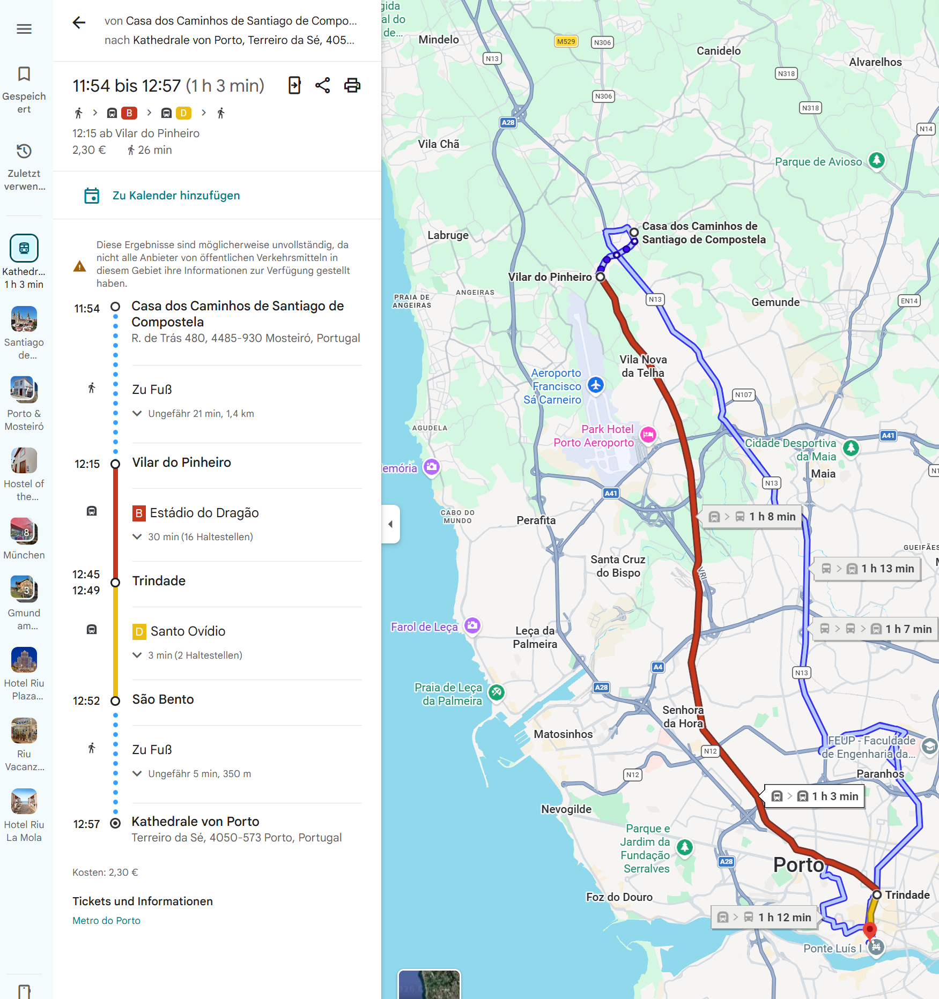
Stadtspaziergang (≈ 5 km)
An der Kathedrale den ersten Pilgerstempel holen, dann zu Fuß durch die Innenstadt: Praça da Liberdade & Avenida dos Aliados (Rathaus, Prachtboulevard) → Torre dos Clérigos (Wahrzeichen-Turm, besteigbar) → Capela das Almas (Kapelle komplett mit blauen Azulejo-Kacheln) → Mercado do Bolhão (renovierte Markthalle) → Rua de Santa Catarina mit dem Jugendstil-Café Majestic → Rotunda da Boavista / Casa da Música.
Weiter Richtung Vairão (≈ 17 km)
Ab Boavista mit Bus/Metro nur das unschöne, verkehrsreiche Stück Richtung Flughafen/Industriegebiet überspringen (laut Gronze der unattraktivste Teil der Etappe). Danach auf dem markierten Camino weiter zu Fuß durch Senhora da Hora und Moreira da Maia, dann ländlich (Eukalyptuswäldchen, gelbe Pfeile) vorbei an Vilar do Pinheiro bis Vairão. Hinweis: Die Kilometeraufteilung zwischen Bus-Abschnitt und Rest ist eine Schätzung — Gronze nennt für die Gesamtetappe Porto→Vilarinho 26,5 km, ohne genaue Zwischen-km.
Highlights
- ⛪ Kathedrale Porto (Sé) & Miradouro da Sé — Panorama zum Start
- 🏛️ Mosteiro de Vairão (altes Benediktinerkloster)
Versorgung
- ☕ Cafés in Porto, Rio Tinto, Maia · 🛒 Supermärkte in Maia/Moreira · 🏧 Multibanco reichlich in Porto/Maia · 💊 Apotheken in Porto/Maia
Unterkunft
Albergue de Peregrinos do Mosteiro de Vairão — 10 €/Nacht, Rua do Convento 21. Nur für Pilger, 50 Betten, keine Reservierung möglich (first come, first served). Check-in ab 14:00, Check-out bis 22:00. Tel. +351 966 431 916. Frühstück optional 6 € (du gehst ohne). Küche, Mikrowelle, Kühlschrank, Fahrradstellplatz vorhanden.
Achtung & Tipp
- ⚠️ Viel Verkehr & Straßenquerungen im Stadtausgang
- 💡 Bus für die tristen ersten km spart die Füße
Fotospots
- 📸 Miradouro da Sé · erste gelbe Pfeile · Kloster Vairão im Abendlicht
3 Vairão → Barcelos03.09.2026
Strecke
Ein langer, aber flacher Tag durch typische Minho-Landschaft: Maisfelder, Weinreben (Vinho Verde), Waldstücke. Nach gut der Hälfte erreichst du das mittelalterliche Rates mit einer der bedeutendsten romanischen Kirchen Nordportugals — guter Ort für eine Pause. Weiter geht's ins lebendige Barcelos am Fluss Cávado, eine der charmantesten Städte der Route. Der 03.09.2026 ist ein Donnerstag: großer Wochenmarkt!
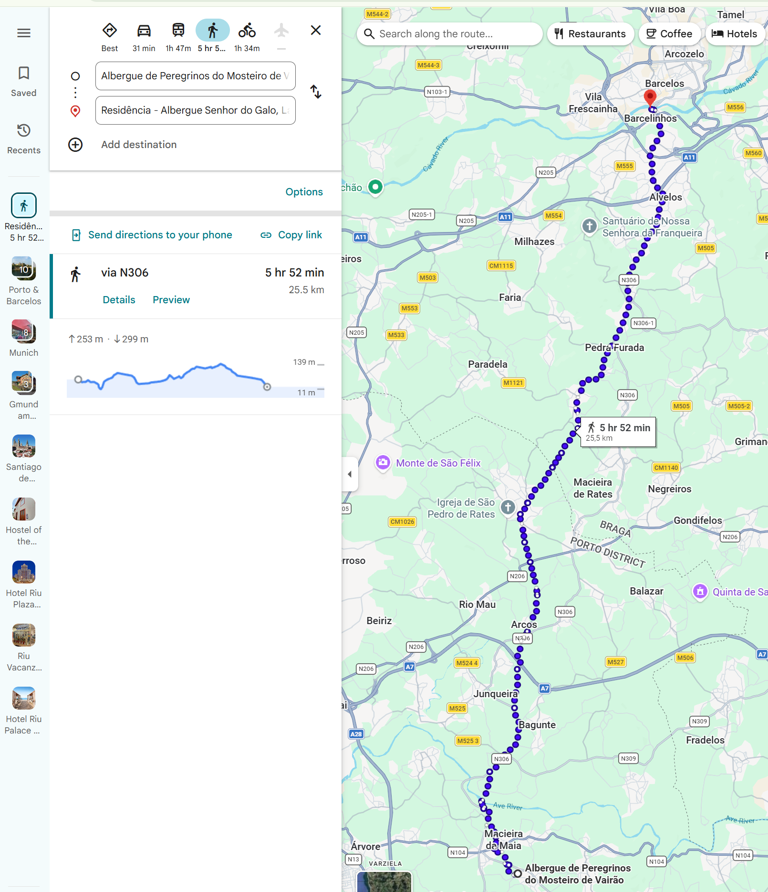
Highlights
- ⛪ Igreja de São Pedro de Rates (romanische Wallfahrtskirche, 11.–13. Jh., Nationaldenkmal)
- 🏛️ Mittelalterlicher Dorfkern, römische Spuren bei Alvarelhos
- 🐓 Galo de Barcelos (Legende vom singenden Hahn, Stadtsymbol) & Cruzeiro do Senhor do Galo
- 🌉 Mittelalterliche Brücke über den Cávado · ⛪ Igreja Matriz (Barockkirche), Templo do Bom Jesus
- 🛍️ Feira de Barcelos (donnerstags, berühmt für Keramik & den bemalten Hahn)
Versorgung
- ☕ Bar in Arcos (km 6) & Rates, viele Cafés in Barcelos · 🛒 Mini-Mercado in Rates, Pingo Doce/Continente/Lidl in Barcelos · 🏧 in Rates unzuverlässig, in Barcelos viele Automaten (aufstocken!) · 💊 Apotheken in Barcelos
Unterkunft
Albergue-Residência do Senhor do Galo, Largo Guilherme Gomes Fernandes, Barcelinhos, 4755-060 — 10 €/Nacht, Schlafsaal. Links vor der Brücke, neben der Feuerwache. Tel. +351 253 833 304.
Achtung & Tipp
- ⚠️ Kein verlässlicher Geldautomat in Rates — Bargeld vorher ziehen!
- 💡 Längerer Tag nach dem sanften Start — Füße & Blasen zwischendurch in Rates kontrollieren
4 Barcelos → Balugães (Casa Altamira)04.09.2026
Strecke
Erste richtige Etappe durch sanft hügelige Agrarlandschaft: Weinreben, Mais, kleine Höfe, Kapellen. Leicht bergauf bis Balugães.
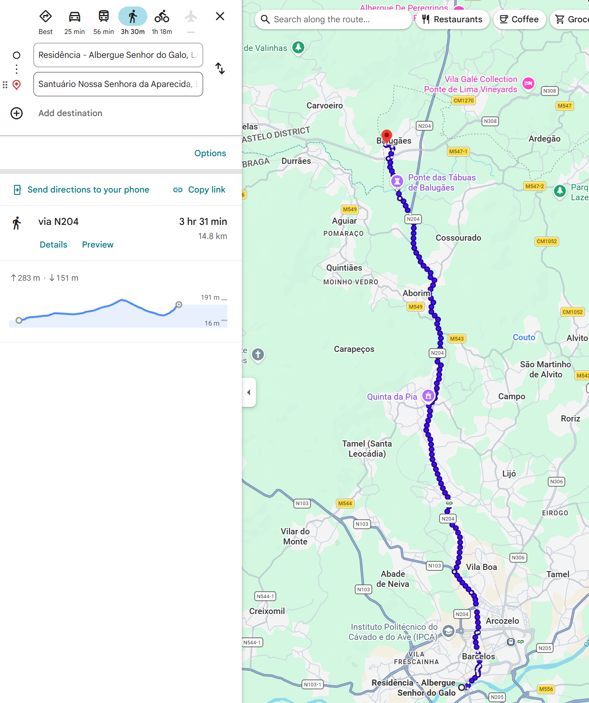
Highlights
- 🌉 Barcelos-Brücke beim Start · ⛪ Wegkapellen & Cruzeiros (kleine Andachtsstätten am Wegrand)
Versorgung
- ☕ Bar in Vila Boa/Lijó · 🛒 in Barcelos Proviant kaufen (unterwegs wenig) · ⚠️ kein Automat unterwegs
Unterkunft
Casa Altamira, Av. Nossa Senhora Aparecida 29, Balugães — Einzelzimmer 35 €, ca. 450 m vom Weg entfernt. Tel. +351 968 848 244 / +351 939 315 314.
Achtung & Tipp
- ⚠️ Einige Asphalt-/Straßenabschnitte mit Verkehr
- 💡 Nur 4 Zimmer — vorab reservieren!
5 Balugães → Ponte de Lima05.09.2026
Strecke
Wunderschöne Etappe in eine der schönsten Kleinstädte Portugals — Ponte de Lima, angeblich die älteste Stadt des Landes. Über sanfte Hügel und Pinienwald hinab ins Tal des Rio Lima, Einlauf über die berühmte mittelalterliche Brücke.
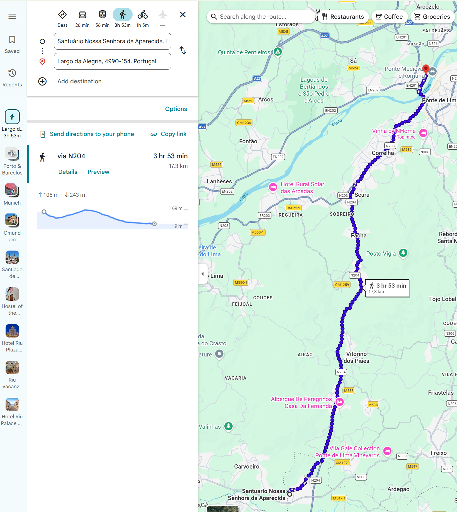
Highlights
- 🌉 Ponte de Lima (teils römische Steinbrücke, 31 Bögen) · ⛪ Igreja Matriz (gotisch-romanische Pfarrkirche) · 🏛️ Torre da Cadeia Velha (altes Gefängnis, heute Aussichtsturm) · 🌳 Platanen-Flusspromenade
Versorgung
- ☕ viele Cafés/Weinlokale · 🛒 Pingo Doce, Continente · 🏧 mehrere Automaten · 💊 Apotheken (Blasenpflaster für morgen!)
Unterkunft
Albergue de Peregrinos de Ponte de Lima, Largo da Alegria (Arcozelo), 4990-154 — nur für Pilger, keine Reservierung, Check-in ab 15:00. Tel. +351 925 403 164 / +351 258 240 200.
Tipp
- 💡 Morgen ist die schwerste Etappe — heute kohlenhydratreich essen, früh schlafen, Sachen bereitlegen
6 Ponte de Lima → Rubiães06.09.2026 · Königsetappe
Strecke
Erste ~8 km flach bis Revolta, dann stetiger Anstieg zur Serra da Labruja über grobe Granitblöcke. Oben Gedenkkreuz & Weitblick. Der Abstieg nach Rubiães ist steil, felsig, rutschig — hier passieren die meisten Stürze.
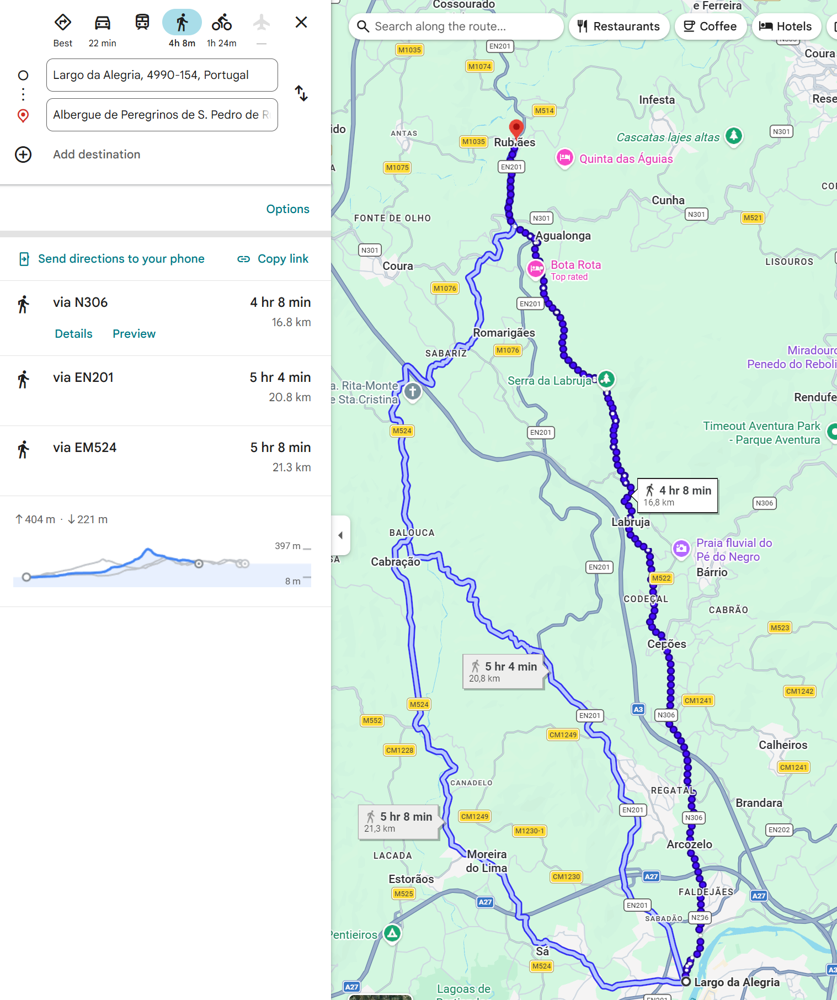
Highlights
- 🏛️ Römische Meilensteine (Via XIX, antike Straßenmarkierungen) bei Rubiães · ✝️ Cruzeiro (Steinkreuz) am Alto da Portela Grande · 🌉 mittelalterliche Brücke im Abstieg
Versorgung
- ☕ Revolta (km 8) = letzte gute Verpflegung vor dem Berg · ⚠️ kein Supermarkt/Automat — Proviant & Wasser (2 L) mitnehmen
Unterkunft
Casa de São Sebastião, Rubiães — direkt am Weg, hinter der öffentlichen Herberge. Reservierbar, Check-in ab 12:00. Tel. +351 962 830 024.
Achtung & Tipp
- ⚠️⚠️ Steiler Abstieg = höchste Sturzgefahr; bei Nässe sehr rutschig
- 💡 Wanderstöcke nutzen, früh starten, am Gipfel Pause, Tempo raus — heute zählt Ankommen, nicht Zeit
7 Rubiães → Tui 🇪🇸07.09.2026 · Grenzübertritt
Strecke
Nach dem Berg entspannt & überwiegend abwärts. Über São Bento und Paços zur Grenzfestung Valença, dann der magische Moment: über die Eisenbrücke Ponte Internacional über den Minho nach Tui in Galicien.
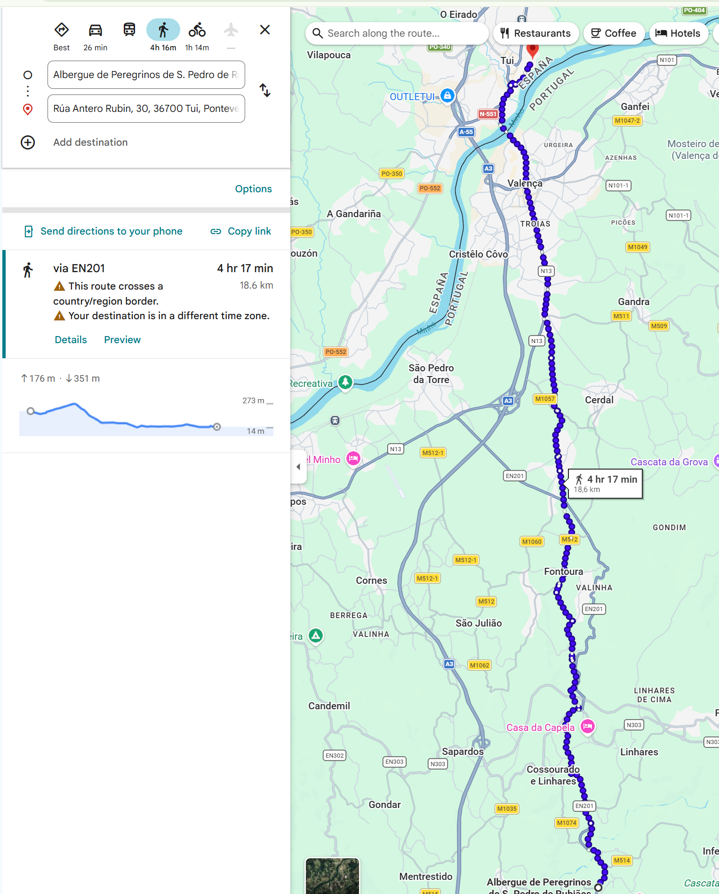
Highlights
- 🏰 Fortaleza de Valença (begehbare Festungswälle, Blick nach Spanien) · 🌉 Grenzbrücke über den Minho (Eisenkonstruktion von Eiffel-Schüler) · ⛪ Kathedrale von Tui (wehrhaft, romanisch-gotisch, 12. Jh.)
Versorgung
- ☕ Cafés in Valença & Tui (erste Tapas!) · 🛒 Supermärkte · 🏧 Automaten · 💊 Apotheken (beides Euro-Zone)
Unterkunft
Albergue Convento del Camino, Rúa Antero Rubín 30, 36700 Tui — im ehemaligen Kloster Santo Domingo (14. Jh.), 17 €/Nacht (Hochsaison), Frühstück optional 3 €. Reservierbar, Check-in 11:00–20:30. Tel. +34 690 328 565.
Tipp
- 💡 Zeitumstellung nicht vergessen — sonst Herbergs-Check-in verpasst
8 Tui → O Porriño08.09.2026
Strecke
Erster voller Tag in Galicien. Zwei Varianten: die naturnahe Variante (empfohlen) entlang des Flüsschens Louro durch schönen Wald — nur ~2 km länger, aber viel schöner und schattiger — oder die kürzere Route durch Industriegebiet.
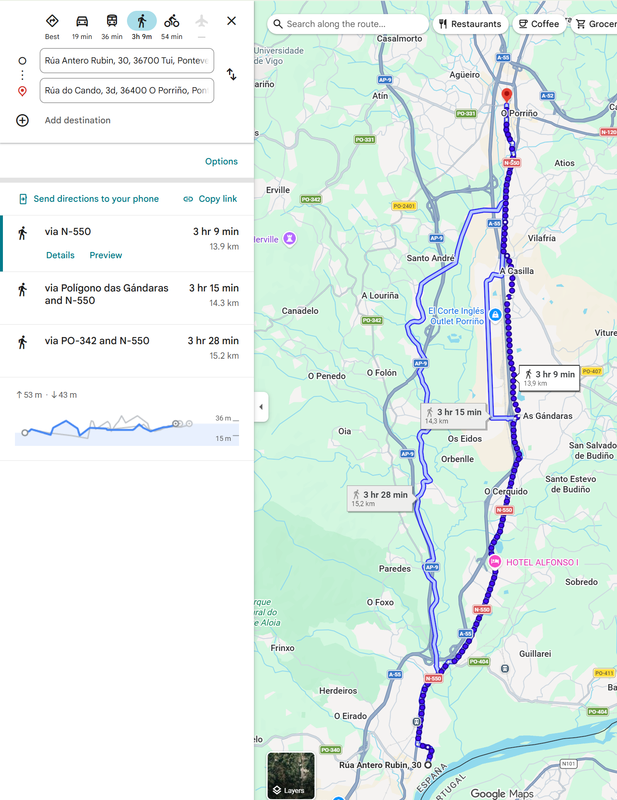
Highlights
- ⛪ San Bartolomé de Rebordáns (romanische Landkirche, 12. Jh.) · 🌳 Waldweg am Louro · 🌉 Ponte das Febres (Legende um den heiligen Telmo) · 🏛️ Jugendstil-Rathaus von O Porriño
Versorgung
- ☕ Frühstück in Tui, Bar in Orbenlle · 🛒 Mercadona, Gadis, Froiz in O Porriño · 🏧/💊 in Tui & O Porriño
Unterkunft
Albergue Rincón del Peregrino, O Porriño — zentral, 50 m vom Weg. Reservierbar, Check-in 12:00–20:00. Tel. +34 886 319 533.
Achtung & Tipp
- ⚠️ Abzweigung Naturvariante beachten (Karte/App bereithalten)
- 💡 Flacher Tag — ideal für Gehtechnik & gleichmäßiges Tempo
9 O Porriño → Redondela09.09.2026
Strecke
Wieder ländlicher & schöner. Über das Straßendorf Mos allmählich bergauf zum Alto de Santiaguiño, dann hinab nach Redondela, der „Stadt der Viadukte". Erster Blick aufs Meer (Ría de Vigo)!
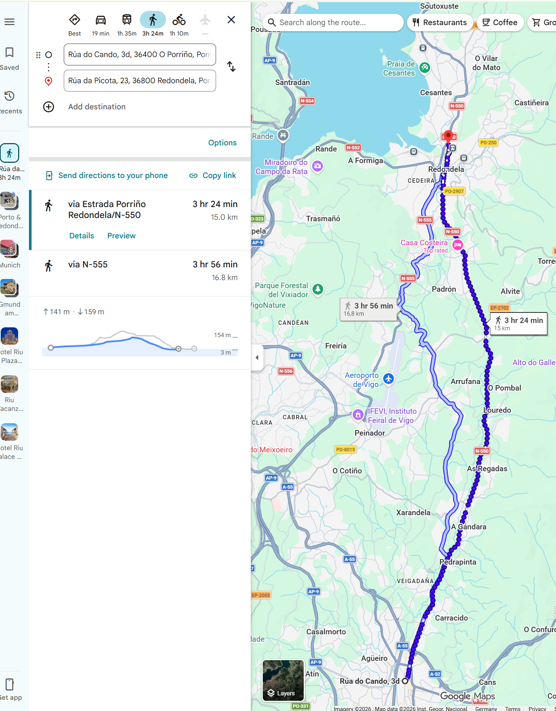
Highlights
- ⛪ Capela de Santiaguiño de Antas (kleine Wegkapelle, Ausblick) · 🏛️ Pazo de Mos (historisches Herrenhaus) · 🚂 Eisenbahn-Viadukte über Redondela (zwei markante Bahnbrücken)
Versorgung
- ☕ legendäre Bar/Herberge in Mos (km 6, Stempel!) · 🛒 Supermärkte in O Porriño/Redondela · 🏧/💊 vorhanden
Unterkunft
Albergue Avoa Regina, Rúa da Picota 23, 36800 Redondela — privat, reservierbar (März–Oktober), Check-in 12:00–20:00. Waschmaschine/Trockner vorhanden. Tel. +34 986 125 297.
Achtung & Tipp
- ⚠️ Ab Redondela Zusammenfluss mit dem Küstenweg → mehr Pilger, früh ankommen/reservieren
- 💡 Blasen früh versorgen — Halbzeit der Galicien-Woche
10 Redondela → Pontevedra10.09.2026
Strecke
Abwechslungsreich entlang der Ría de Vigo & durch stille Wälder. Über Arcade (berühmt für Austern!) und die mittelalterliche Ponte Sampaio, dann Waldanstiege bis in die eleganteste Altstadt Galiciens: Pontevedra (autofrei, Granitgassen).
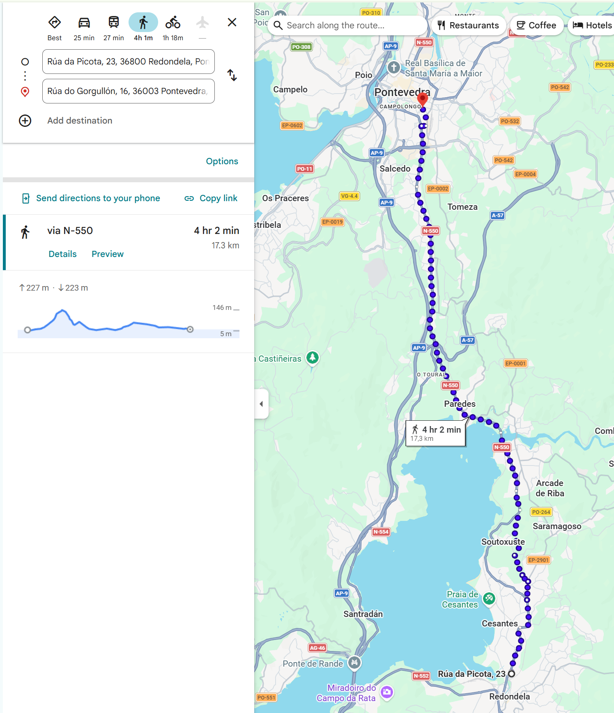
Highlights
- 🌉 Ponte Sampaio (mittelalterliche Brücke, Schlacht von 1809) · 🦪 Arcade (Austernort) · ⛪ Santuario da Peregrina (muschelförmiger Grundriss) · 🏛️ Praza da Ferrería & Praza da Leña (Altstadtplätze)
Versorgung
- ☕ Bars in Arcade (km 7) · 🛒 Mercadona, Gadis, Froiz · 🏧 viele Automaten · 💊 mehrere Apotheken
Unterkunft
dpaso Urban Hostel, Rúa do Gorgullón 16, Pontevedra — ab 22 €/Nacht, reservierbar, Check-in 14:00–20:00 (Zugangscode). Tel. +34 625 145 630.
Tipp
- 💡 Abends ausgiebige Tapas-Runde auf den Plätzen — du hast über 150 km in den Beinen!
11 Pontevedra → Caldas de Reis11.09.2026
Strecke
Längste Etappe der Galicien-Woche, aber sehr lohnend: viel Wald, alte Römerwege, Bäche und typische Weiler mit hórreos (Kornspeicher auf Stelzen). Ziel ist das Thermalstädtchen Caldas de Reis — Füße im warmen Quellwasser baden!
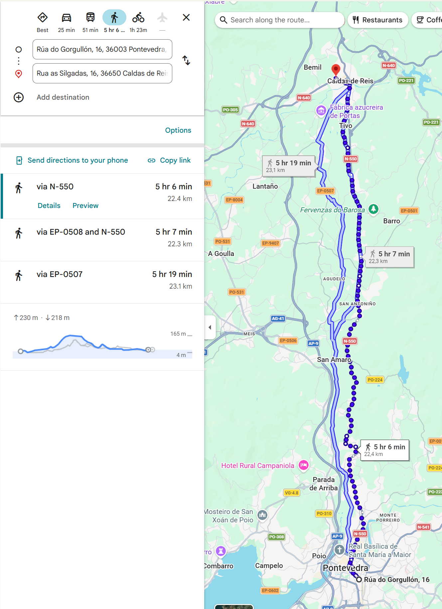
Highlights
- 🌾 hórreos in den Weilern (traditionelle Kornspeicher auf Stelzen) · 🌳 Römerweg-Abschnitte (Via XIX) · ♨️ Thermalquellen (Fonte das Burgas, kostenlos zugänglich) · 🌳 Carballeira-Baumpark (alter Eichenhain)
Versorgung
- ☕ Bars in San Amaro/Barro (km 6–9) · 🛒 Supermärkte · 🚰 viele Brunnen · 🏧/💊 vorhanden
Unterkunft
Albergue GBC Caldas - Celenis, Rúa as Silgadas 16, 36650 Caldas de Reis — reservierbar, mit Abendessen/Frühstück-Option, Garten & beheiztem Sommerpool. Tel. +34 604 053 729.
Tipp
- 💡 Kräfte einteilen, regelmäßig trinken; warmes Thermal-Fußbad zur Regeneration nutzen
12 Caldas de Reis → Padrón12.09.2026
Strecke
Ruhige, grüne Etappe durch Wälder und entlang von Bächen nach Padrón — einer der historisch wichtigsten Orte des Jakobswegs. Hier landete der Legende nach das Steinboot mit dem Leichnam des Apostels Jakobus.
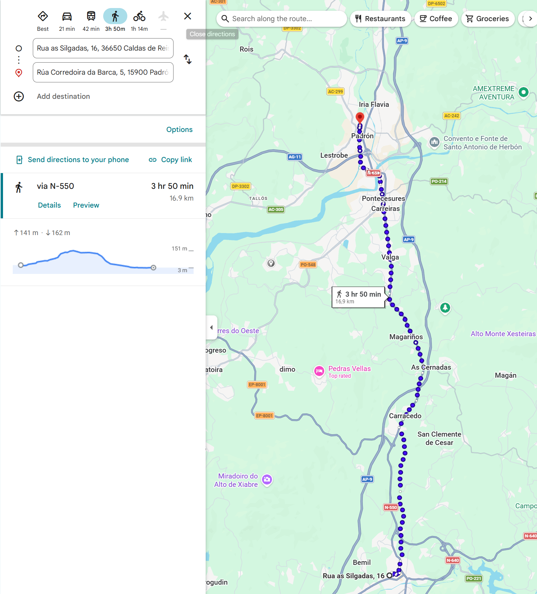
Highlights
- ⛪ Igrexa de Santiago (legendärer „Pedrón"-Stein unter dem Altar) · ⛪ Santuario da Escravitude (Barockkirche mit Wallfahrtstradition) · 🌶️ Pimientos de Padrón (berühmte kleine Bratpaprika)
Versorgung
- ☕ Bars in O Pino/Carracedo · 🛒 Supermärkte in Pontecesures/Padrón · 🏧/💊 in Padrón
Unterkunft
Albergue Murgadán, Rúa Corredoira da Barca 5, Padrón — reservierbar (März–Oktober).
Tipp
- 💡 Unbedingt Pimientos de Padrón mit grobem Salz probieren
13 Padrón → O Milladoiro13.09.2026
Strecke
Vorletzte Etappe bis an die Schwelle von Santiago. Über Iria Flavia (uralter Bischofssitz) und mehrere Dörfer stetig bergauf nach O Milladoiro, einem Vorort auf einer Anhöhe — morgen nur noch ~8 km bis zur Kathedrale.
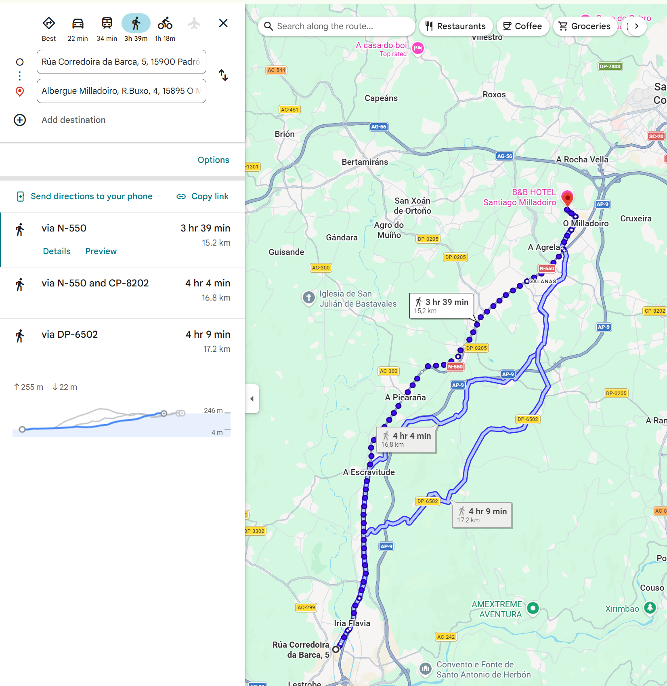
Highlights
- ⛪ Colexiata de Iria Flavia (uralter Bischofssitz, Ursprung des Camino-Mythos) · 🏛️ Fundación Camilo José Cela (Museum zum Literaturnobelpreisträger) · 🏛️ Pazo de Faramello (historisches Herrenhaus) · 📸 erster Fernblick Richtung Santiago
Versorgung
- ☕ Bars in A Escravitude/Teo · 🛒 Gadis, Froiz, Mercadona in O Milladoiro · 🏧/💊 vorhanden
Unterkunft
Albergue Milladoiro, O Milladoiro — am Ortsausgang, 300 m vom Weg, 600 m vom Zentrum. Reservierbar, Check-in 12:00–20:00. Tel. +34 981 938 382.
Tipp
- 💡 Kurz vor Santiago halten = morgen früh, ausgeruht & zur besten Zeit an der Kathedrale ankommen. Herberge vorab reservieren.
14 O Milladoiro → Santiago de Compostela 🎉14.09.2026 · ZIEL
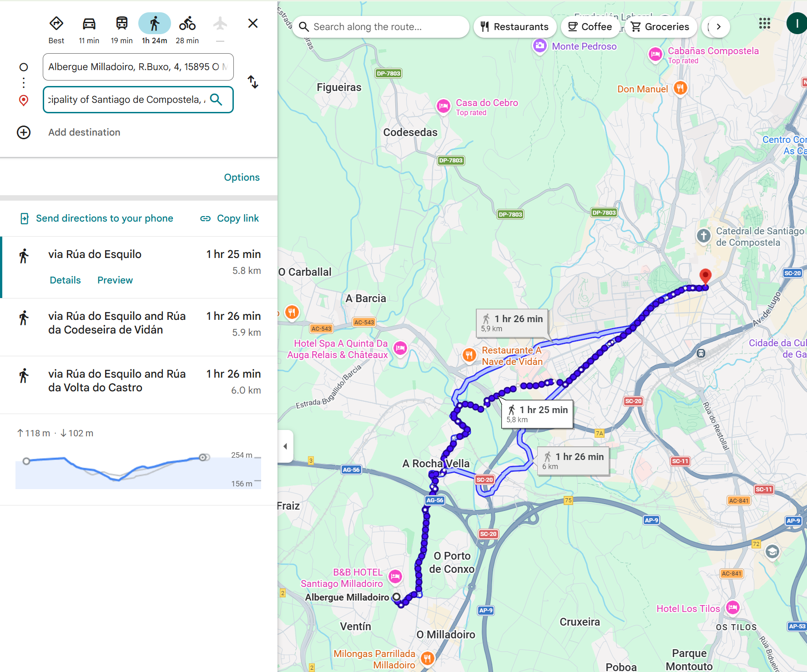
Ablauf am Zieltag
- Früh starten (7–8 Uhr) → Ankunft am Vormittag, gutes Licht
- Pilgermesse i.d.R. 12:00 & 19:30 Uhr (Botafumeiro-Zeiten prüfen)
- Compostela abholen im Pilgerbüro (Rúa Carretas 33) — Pilgerpass mit 2 Stempeln/Tag ab Tui
Highlights
- ⛪ Kathedrale & Pórtico da Gloria (romanisches Meisterportal) · 🏛️ Praza do Obradoiro (Hauptplatz vor der Kathedrale) · 🌳 Parque da Alameda (bester Kathedralen-Blick) · 🏛️ Mercado de Abastos (traditioneller Markt)
Genuss
- 🍰 Tarta de Santiago · 🐙 Pulpo á feira
Rückreise noch am selben Tag
Nach der Ankunft und Besichtigung mit dem Zug zurück nach Porto.
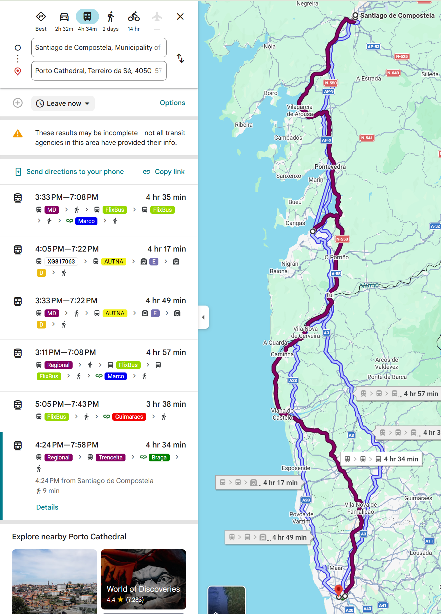
Übernachtung am Flughafen Porto, Rückflug um 06:00 Uhr.
Meine Übernachtungen
Meine konkreten Buchungen für jede Nacht
Unsere Unterkünfte mit Kontakt
| Nacht | Ort | Unterkunft & Kontakt | Karte / Gronze |
|---|---|---|---|
| 01.09 | Mosteiró | Casa dos Caminhos — bereits gebucht, 25 € + 5 € später Check-in | Auf Karte ↗ |
| 02.09 | Vairão | Albergue Mosteiro de Vairão — 10 €, keine Reservierung, Tel. +351 966 431 916 | Karte ↗ · Gronze ↗ |
| 03.09 | Barcelinhos | Albergue-Residência do Senhor do Galo — 10 €, Tel. +351 253 833 304 | Karte ↗ · Gronze ↗ |
| 04.09 | Balugães | Casa Altamira — Einzelzimmer 35 €, Tel. +351 968 848 244 | Karte ↗ · Gronze ↗ |
| 05.09 | Ponte de Lima | Albergue de Peregrinos de Ponte de Lima — keine Reservierung, Tel. +351 925 403 164 | Karte ↗ · Gronze ↗ |
| 06.09 | Rubiães | Casa de São Sebastião — reservierbar, Tel. +351 962 830 024 | Karte ↗ · Gronze ↗ |
| 07.09 | Tui | Albergue Convento del Camino — 17 €, Tel. +34 690 328 565 | Karte ↗ · Gronze ↗ |
| 08.09 | O Porriño | Albergue Rincón del Peregrino — reservierbar, Tel. +34 886 319 533 | Karte ↗ · Gronze ↗ |
| 09.09 | Redondela | Albergue Avoa Regina — Tel. +34 986 125 297 | Karte ↗ · Gronze ↗ |
| 10.09 | Pontevedra | dpaso Urban Hostel — ab 22 €, Tel. +34 625 145 630 | Karte ↗ · Gronze ↗ |
| 11.09 | Caldas de Reis | Albergue GBC Caldas - Celenis — Tel. +34 604 053 729 | Karte ↗ · Gronze ↗ |
| 12.09 | Padrón | Albergue Murgadán | Karte ↗ · Gronze ↗ |
| 13.09 | O Milladoiro | Albergue Milladoiro — reservierbar, Tel. +34 981 938 382 | Karte ↗ · Gronze ↗ |
| 14.09 | Flughafen Porto | Zug zurück nach Porto, Nacht am Flughafen, Rückflug 06:00 Uhr | — |
Karten
Interaktiv & druckfreundlich
Die beste kostenlose, interaktive Karte mit Route, Höhenprofilen & Herbergen bietet Gronze.
Sehenswürdigkeiten auf dem Weg
Motive & frei lizenzierte Bezugsquellen
Zu den schönsten Motiven der Route findest du hier kuratierte, überwiegend frei lizenzierte Bildquellen (Wikimedia Commons, gemeinfrei/Creative Commons) — Lizenz vor Verwendung prüfen.

Portugal & Minho
Galicien & Ziel
Meine Packliste
Für Einsteiger · Zielgewicht 6–8 kg
Faustregel: max. 10 % deines Körpergewichts. Kennzeichnung: ✅ unbedingt · 🟡 optional · ⛔ nicht nötig.
Schuhe & Füße ✅
- ✅ Eingelaufene Trailschuhe New Balance Nitrel V6 + spezielle Einlagen fürs Langstrecken-Laufen
- ✅ Leichte Sandalen (Camper) für abends
- ✅ Flip-Flops für die Dusche
- ✅ Coolmax-Wandersocken: mittel/Kompression (2 Paar) & kurz (3 Paar) — keine Baumwolle!
Kleidung
- ✅ 2 Funktions-Shirts
- ✅ Wanderhose + 2× leichte Synthetik-Kurzhose
- ✅ Leichte Fleece-/Daunenjacke
- ✅ Sonnenhut · ✅ Sonnenbrille
- ✅ Schlafanzug (T-Shirt + kurze Hose) · ⛔ Jeans & Baumwoll-Hoodies
Regen ✅
- ✅ Regenjacke + Rucksack-Regenhülle
Rucksack & Schlafen
- ✅ Rucksack 30–40 L mit Hüftgurt · ✅ Trekkingstöcke
- ✅ Trinkblase 1,5 L · ✅ Hüfttasche
- ✅ Hüttenschlafsack (viele Herbergen ohne Bettwäsche)
- ✅ Ohrstöpsel + Schlafmaske · ✅ Stirnlampe
Medikamente & Hygiene ✅
- ✅ Blasenpflaster + Leukotape (das Wichtigste!) · ✅ Knie-Tapes
- ✅ Kulturtasche mit Hygieneartikeln
- ✅ Schmerzmittel, Mini-Erste-Hilfe, persönliche Medikamente
- ✅ Sonnencreme LSF 30–50, feste Seife, Mikrofaser-Handtuch
- 🟡 Elektrolyt-/Magnesiumtabletten
Technik & Dokumente ✅
- ✅ Smartphone + Powerbank (10.000 mAh) · Steckdose = wie DE
- ✅ Perso/Pass, Pilgerpass, EHIC-Karte, Bargeld, Kreditkarte
Kostenübersicht
14 Tage · 3 Budgets
| Budget | pro Tag | + An-/Rückreise & Einmalkosten | Gesamt (Richtwert) |
|---|---|---|---|
| 💰 Sparbudget | ~25–30 € | + ~120 € | ≈ 450–550 € |
| 💶 Durchschnitt | ~40–50 € | + ~250 € | ≈ 850–950 € |
| 💳 Komfort | ~75–110 € | + ~450 € | ≈ 1.600–1.800 € |
- Pilgerpass ~2–3 € · Compostela-Urkunde 3 €
- Menú del peregrino (3 Gänge inkl. Wein) ~10–15 € = bestes Preis-Leistungs-Essen
- Immer 100–150 € Notreserve (bar + Karte) einplanen
- Viele Dörfer/Herbergen nur Bar — Bargeld in größeren Orten ziehen
Sicherheit
Notruf
Quellen & Hinweise
Aktualität & Nachweise
Hauptquellen
Dieser Reiseführer wurde für die private Nutzung erstellt. Bilder werden nicht direkt eingebettet, sondern über frei zugängliche Bezugsquellen verlinkt. Kartendaten © OpenStreetMap-Mitwirkende.